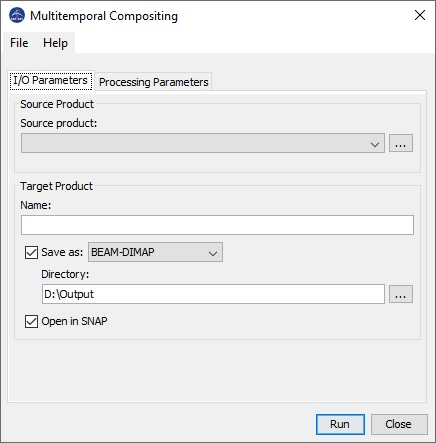

Multitemporal Compositing Operator
In mountainous and hilly
areas, SAR imagery is severely distorted geometrically and
radiometrically. With the applications of Geometric Terrain Correction
and Terrain Flattening, both the geometric and radiometric terrain
effects can be removed from the backscatters leaving noise being the
only factor affecting the land cover classification accuracy.
Multi-temporal filtering can be applied in this case to reduce the
noise level. Also the effects of spatially varying local resolution can
be compensated if images of both ascending and descending views are
combined. This operator generates a composite SAR image from a stack of
terrain-flattened and geometrically terrain corrected images together
with their simulated local illuminated areas.
The operation requires input images in map geometry. Therefore the processing chain should be as follows:
- Run Terrain Flattening operator with the Output Simulated Image option selected (this writes the
simulatedImage band); - Run Range Doppler Geocoding operator with the terrain-flattened images as input, keeping the
simulatedImage band; - Run Create Stack with Maximum Extent option selected. Maximum (and Minimum) extent needs a Resampling Type other than NONE; the dialog sets this automatically for map-projected input, but in GPT and graphs you must set it yourself;
- Run this operator with the stack created above as input.
Input and Output
- The
input to this operator should be a stack of terrain-flattened images. For polarimetric SAR
product, it should be in T3, C3, C2 matrix format.
- The
output of this operator is a multitemporal composite image for each band in the reference product. For polarimetric
SAR product, the output is terrain flattened coherency or covariance
matrices in T3, C3 or C2 format.
- Each output pixel is the weighted mean Σ(γi/Ai) / Σ(1/Ai), with
Ai the simulated area of date i. Dates where the area or γ0 is no-data, zero or NaN
are skipped.
- Output bands are named after the Reference band without the
_ref date suffix. The output product
name gets the suffix _MC.
- Each backscatter band is paired with the
simulatedImage band of the same acquisition: the same
role (_ref or _sec) and the same date. The counter that Create Stack adds after
_sec is ignored, so Gamma0_VV_sec1_13Jan2020 is paired with
simulatedImage_sec2_13Jan2020. The band order in the stack does not matter.
- Stack only the backscatter and
simulatedImage bands. Any other Reference band (for example
layoverShadowMask) is composited too. The operator stops with an error naming the band when a band
has no _ref or _sec suffix, when a band has no simulatedImage band of
the same date, or when two Secondaries share a date (for example an ascending and a descending pass on the
same day). Composite such same-day acquisitions in separate stacks.
Parameters Used
No processing parameters are needed for this operator.

References
- Small, D. (2012). SAR backscatter multitemporal compositing via local resolution weighting. 2012 IEEE International Geoscience and Remote Sensing Symposium (IGARSS), 4521–4524. doi:10.1109/IGARSS.2012.6350465
- Small, D. (2011). Flattening gamma: Radiometric terrain correction for SAR imagery. IEEE Transactions on Geoscience and Remote Sensing, 49(8), 3081–3093. doi:10.1109/TGRS.2011.2120616
Processing parameters (reference)
GPT operator: Multitemporal-Compositing. Generated from the operator source; parameter names are those used in GPT and graph XML.
This operator has no processing parameters.
Background
Prerequisites
- A coregistered, calibrated, map-projected stack of terrain-flattened and terrain-corrected images
- The matching
simulatedImage bands, from Terrain Flattening with Output Simulated Image selected and kept through Terrain Correction and Create Stack; one per acquisition date
Next step
- Export or analyse the result